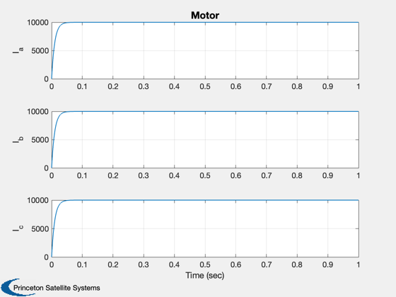
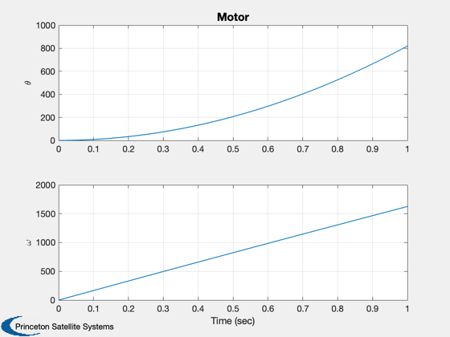

Demonstrates a switched reluctance generator.
Switched reluctance generators do not have any magnets and rely on torque produced by the magnetic steel (just like a solenoid). The generators are relatively inexpensive but require complex controls. An alternative is a combination reluctance/magnet generator that uses both for torque. This kind of machine is used in the Toyota Prius.
------------------------------------------------------------------------ See also Plot2D, TimeLabl, RK4 ------------------------------------------------------------------------
Contents
%-------------------------------------------------------------------------- % Copyright (c) 1995-2006 Princeton Satellite Systems, Inc. % All rights reserved. %--------------------------------------------------------------------------
The integration time step
%--------------------------
dT = 50e-6;
tEnd = 1;
nSim = tEnd/dT;
Motor parameters
%----------------- d.p = 6; % Number of poles d.b = 0.003; % Viscous friction (Nms/rad) d.s = 0; % Static friction (Nm) d.j = 0.06; % Inertia (kg-m^2) d.lMD = 0.0012; % Direct mutual inductance (H) d.lMQ = 0.0002; % Quadrature mutual inductance (H) d.lLS = 0.0001; % Self inductance (H) d.rS = 0.01; % Stator resistance (Ohm) d.tL = 100; % Load torque (Nm) d.u = 100*ones(3,1); % Phase voltages (V)
Plotting array
%---------------
xPlot = zeros(5,nSim);
x = zeros(5,1);
Run the simulation
%------------------- for k = 1:nSim % Plotting %--------- xPlot(:,k) = x; % Integrate %---------- x = RK4('ReluctanceMachineRHS',x,dT,0,d); end
2D Plots
%--------- [t, tL] = TimeLabl( (0:(nSim-1))*dT ); Plot2D(t,xPlot(1:3,:),tL,{'I_a';'I_b';'I_c'},'Motor'); Plot2D(t,xPlot(4:5,:),tL,{'\theta';'\omega'},'Motor'); % PSS internal file version information %-------------------------------------- % $Date$ % $Id: beda8e073da554136eb3c714ea54a443f6bfd204 $ 